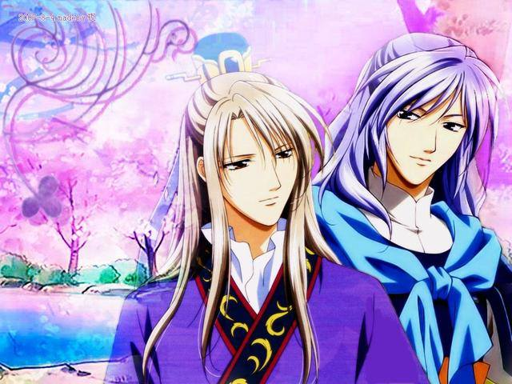
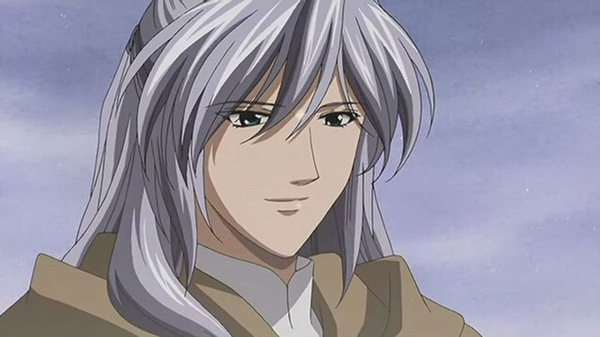
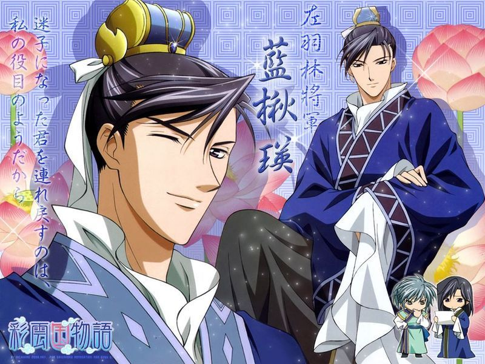
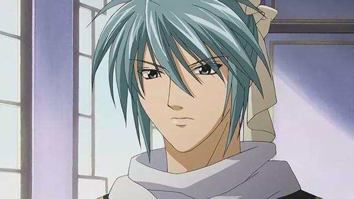

| 名子 |
人物簡介 |
圖片 |
| 紅秀麗 |
紅邵可和薔薇公主的女兒，堅強獨立，勤奮節儉，擅於烹飪和拉二胡。酒量非常大，賭運極強。害怕雷聲，衹要一打雷就會讓靜蘭陪她睡，而且會緊抱靜蘭不放驚叫連連地渡過一整晚。在薔薇公主去世後，紅家派來的家僕把他們的財產和薔薇公主的遺物搜刮一空，所以雖然貴為名門紅家直系長千金，但是家境卻十分貧困。因此，需要經常四處做兼職而賺取生活費。小時候經歷過動亂，眼見百姓生活在水深火熱之中，民不聊生，因此立志成為能為百姓帶來幸福的官吏。當得知女性不能參加國試後，便將夢想寄予孩子們，在私塾裡當老師。後有成功當上官吏。 |
|
| 紫劉輝 |
現任彩雲國國王，喜歡秀麗，由於生為先王最小的六王子，因此被母親嫌棄，更被異母兄弟欺凌。在八年前的王位之爭中，除清苑外，其他異母兄弟均同歸於盡，因此登上王位。唯一對他溫柔的兄長 - 清苑皇子在他6歲時遭到流放。為了等待王兄回來，讓他取代自己登上王位，假裝為好男色的昏君。學問由邵可傳授，劍術則由宋太傅指導，文武皆擅長，才華出眾。被後世稱為最盛世的名君，年號「上治」。與秀麗邂逅之後，立意成為明君，整頓朝政。受到秀麗影響，非常喜愛童話故事「薔薇公主」。劉輝經常造訪府庫找邵可談心，是少數能忍受邵可極苦「父茶」的人。
因為兒時經歷害怕寂寞、怕黑，但和秀麗相遇後改善了不少。秀麗離宮後，為了接近秀麗，開放女性參加國試。希望能成為童話故事中既愛著「薔薇姬」也被其所愛的平凡男子，能等就等，不使用王的權利硬將秀麗娶進後宮。同時為了不讓任何人送姑娘進後宮，宣言「只娶一妃」。 |
 |
| 茈靜蘭 |
紅家的家臣，有一張娃娃臉，故自稱自己只有二十一歲。真正的身份是被流放的二皇子 - 清苑皇子。被流放至茶州，被茶朔洵送進殺刃賊(被稱為小旋風)，其間是不堪的回憶，卻也因此結識浪燕青。因為在武藝表現出色和效忠劉輝與秀麗，而被後世以「武有藍茈，文有李紅」、「紅花馭雙玉」所讚揚。精通琴棋書畫，劍藝出眾，文武雙全的他被譽為最優秀的皇子，更曾受先王御賜「干將」、「莫邪」兩把寶劍，因此曾被認定為繼任國王的人選。在皇子時期，不相信除了劉輝其它的人，然而在被邵可一家收養後，逐漸打開心扉，但仍然習慣和人保持一定距離。對秀麗、邵可一家人和劉輝相當溫柔，但對其他人會展現心機和腹黑的一面。在浪燕青前甚至會展露兇惡的一面，而在榛蘇芳面前會完全失去自己的「美男子」形象，榛蘇芳稱為「竹筍家僕」、「美男家臣」。 |
 |
| 藍楸瑛 |
年輕的武官，左羽林軍將軍，紫劉輝的近臣。名門藍家直系出身，藍龍蓮的兄長。藍龍蓮叫他做愚兄之四。與李絳攸是同期國試考生，同屆18歲以榜眼及第，卻在數年間辭去文官之職轉而成為武官。（因為劉輝沒有對楸瑛採取行動，在藍家的命令下轉為武官）女性關係相當複雜，絳攸說他是「萬年常春頭」。（意指他一年四季常年發春，滿腦子都是與女性有關的風流韻事。）但也對女人動過真情的時候，初戀情人是玉華，但後來嫁給了大哥雪那，傷心前往貴陽。之後在後宮遇到與他同病相憐的珠翠，進而喜歡上她。從參加國試開始，便與李絳攸結下孽緣，常常戲弄他。
與絳攸一起接受了劉輝的「御賜之花」-菖蒲，兩人因此被後世譽為「雙花菖蒲」。故事開始的半月前，曾經和絳攸一起在府庫見過秀麗的母親薔君（的靈魂）。精通劍術、騎術、棋藝，真正的實力隱藏的很完美，相當的深藏不露，輕浮的外表是保護色。劍術僅在兩大將軍之下（但也只會在兩大將軍前展現自己的實力）。被後世流傳著「武有藍茈，文有李紅」所讚揚。與司馬迅是摯友。藍十三姬是楸瑛最疼愛的妹妹。 |
 |
| 李絳攸 |
年輕的文官，吏部侍郎。紅黎深的養子，曾經是他的部下。絳攸姓「李」，來自於養父黎深所喜歡的李樹；「絳」意謂大紅色，表示他是黎深引以為傲的兒子；「攸」是水流動的樣子，代表了「希望不要被紅家束縛」之意。16歲時高中狀元，與藍楸瑛是同窗。被譽為宮廷第一才子的有名能吏，亦是劉輝的近臣。是個不折不扣的大路癡，走出三十步以外的範圍就會迷路。雖然自稱「理性如銅牆鐵壁」，但迷路之後暴躁易怒，到歇斯底里的狀態。路癡的原因是養母百合擔心幼小的絳攸離開黎深，而將標示方向的物品亂放，導致日後毫無方向感。曾經有過喝醉反而沒有迷路的經驗。由於狀元及第時的親事攻勢因而厭惡女人，但是秀麗作為貴妃而在後宮時與相處甚歡（據絳攸的說法是，他當秀麗是徒弟而不是女人），經常隨著楸瑛拜訪其府邸，也教導國試的學習。由於那件事而被黎深說了「被搶先」時被其討厭。從劉輝那收下和楸瑛接受的紫花菖蒲（稱為「御賜之花」）。花菖蒲的花語是「信賴」。紫色花菖蒲又另有一「保護王者之花（秀麗）」之意。兩人因此被後世譽為「雙花菖蒲」 。因為在文官和紅秀麗同樣表現出色，而被後世以「武有藍茈，文有李紅」所讚揚。故事開始的半月前，曾經和楸瑛一起見過秀麗的母親薔君（的靈魂）。曾經被玖琅要求跟秀麗結婚以繼承紅家宗主之位。因為被黎深收養而視以他的意願為優先。 |
 |
| 紅邵可 |
紅家的長子，秀麗的父親，黎深和玖琅的兄長。負責管理府庫的書籍，平易近人的有識之士。真實身分是暗殺集團「風之狼」的二代首領「黑狼」，初代黑狼「鬼姬」死後，為了保護紅家三兄弟而繼承了黑狼。鬼姬認為邵可是非常溫柔的人，對自己的事漠不關心，但為了弟弟就算要殺人也行，明明是這樣的人自己卻覺得自己相當的冷酷。被鬼姬稱為「魁斗」。（北斗七星的第一顆星，象徵死亡）在遇到紅仙之前因「保護弟弟」而活的責任而深感疲倦，在先代黑狼死後更決意為死而前往縹家暗殺紅仙，最終在付予「人類的自尊」及「世界」為代價解開紅仙的鎖鏈，並且決定自己要為了珍重的人而活著。深受黎深的仰慕，然而玖琅卻認為他為人太過和善，不適任宗主之職而將他逐出家門。由於他很早已隱藏自己的能力，所以人們不易發現他的學識高深莫測。不擅長泡茶，他所泡的茶味道十分苦，通稱「父茶」（取諧音之意）。酒量很強，但比不上自己妻子。自幼時便為秀麗打下優秀的國試基礎，收養靜蘭且知曉他的身分但依舊視他為己出。同時傳授劉輝學問並委託宋太傅教導武藝，使得劉輝將邵可視為依靠而經常造訪府庫與邵可談心。也得到街坊鄰居的尊敬，被稱為「紅老師」。擅長彈琵琶，其琵琶的音色和紅玉環一樣是「死之琵琶」（因為不斷殺人而導致彈奏出淒美絕倫的音色），在暗殺其大伯母紅玉環後絕彈（理由是彈奏殺人的琵琶會被討厭）。曾被先王威脅而彈奏，先王還曾對劉輝說：「如果世上好到連邵可都會彈起琵琶時，就表示你已成為最好的國王」。個性有為了所愛之人而不擇手段的一面，曾為了阻止秀麗被抓走，不惜打破封印眾多妖怪的寶鏡。也擁有能夠將女兒和國家放在天秤上衡量的「冰之理性」，是被先王、霄太師所認可的政治家。楸瑛也曾說過，若邵可參與政治，藍姓官吏將提早回歸。年輕時曾擔任藍家三胞胎（現任藍家宗主）的家庭教師並深受其崇拜，現在依然有書信往來。 |
|